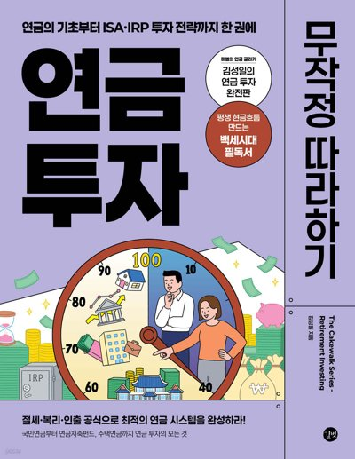

국민연금 핵심 요약은 『연금투자 무작정 따라하기』에서 가져왔고, 연금보험료율·A값·기준소득월액 상·하한 등 기준값은 2026년 10월 기준 법령·고시에 맞춰 반영했습니다. 연금저축·IRP·ISA·퇴직연금 활용법은 책을 참고하세요. 책 소개 보기
"2055년이면 기금이 고갈된다"는 말은 쌓아 둔 돈이 줄어든다는 뜻이지 줄 돈이 없어진다는 뜻이 아닙니다. 독일과 영국은 큰 적립금 없이 그해 걷은 보험료와 세금으로 연금을 주지만, 연금은 끊기지 않고 나옵니다. 국가가 망하지 않는 한 국민연금은 나옵니다. 다만 미래 세대의 보험료 부담이 커질 수 있어 연금보험료율 인상 같은 연금개혁이 이어질 수 있습니다.
구매력(Buying/Purchasing Power)이란 돈으로 물건을 살 수 있는 능력을 말합니다. 10년 전에는 1만 원으로 치킨 한 마리를 사 먹을 수 있었지만, 지금은 반 마리도 못 사 먹습니다. 이를 다르게 표현하면 구매력이 반토막 났다고 합니다. 국민연금은 이 구매력을 지켜 줍니다. 즉, 통장에 찍히는 금액(숫자)이 중요한 게 아니라, 그 돈으로 '무엇을 얼마나 살 수 있느냐'가 핵심입니다.
| 나이 | 치킨 한 마리 (물가 연 2.5%) | 민간 연금보험 종신형 (월 30만 원 그대로) | 국민연금 (물가만큼 인상) |
|---|---|---|---|
| 60세 | 2만 원 | 15마리 | 월 30만 원 · 15마리 |
| 100세 | 5만 3,700원 | 5마리 | 월 80만 5,500원 · 15마리 |
국민연금은 노후뿐 아니라 장애와 사망까지 함께 보장하는 사회보험입니다.
출생연도에 따라 지급개시연령(연금을 받기 시작하는 나이)이 다릅니다. 1969년 이후 출생이라면 만 65세 생일이 속한 달의 다음 달부터 받고, 지급일은 매월 25일입니다. 최대 5년 앞당겨 덜 받거나(조기노령연금), 최대 5년 늦춰 더 받을 수도 있습니다(연기연금).
연금보험료 = 기준소득월액 × 연금보험료율입니다. 기준소득월액은 가입자가 신고한 소득월액에서 천 원 미만을 절사한 금액으로, 의 범위에서 정해집니다. 연금보험료율은 2025년까지 9%였고 2026년 9.5%부터 매년 0.5%p씩 올라 2033년부터 13%가 됩니다.
기준소득월액이란 국민연금의 보험료 및 급여 산정을 위하여 가입자가 신고한 소득월액에서 천 원 미만을 절사한 금액을 말합니다. 매년 변경될 수 있으며, 3월 말까지 보건복지부 장관이 고시하고 해당 연도 7월부터 1년간 적용합니다. 2026.7.1.~2027.6.30. 기준으로 최저 41만 원에서 최고 659만 원까지의 범위로 결정됩니다. 따라서 신고한 소득월액이 41만 원보다 적으면 41만 원을 기준소득월액으로 하고, 659만 원보다 많으면 659만 원을 기준소득월액으로 합니다. 하한·상한은 매년 A값이 오른 비율만큼 조정하며, 2026년에는 A값이 약 3.4% 올라 하한이 40만 원에서 41만 원으로, 상한이 637만 원에서 659만 원으로 바뀌었습니다(국민연금법 시행령 §5).
신고하는 소득월액은 세금과 4대보험료를 떼기 전 소득에서 비과세 소득을 뺀 금액입니다(국민연금법 §3①, 시행령 §3). 직장인(사업장가입자)은 전년도에 받은 근로소득(상여 포함, 식대 등 비과세 근로소득 제외)을 하루 평균으로 나눈 금액의 30일분으로 공단이 매년 정해 7월부터 다음 해 6월까지 적용합니다(시행령 §7). 자영업자(지역가입자)는 사업소득에서 필요경비를 뺀 금액을 본인이 신고합니다. 임의가입자는 지역가입자 기준소득월액의 중위수(2026년 4월~2027년 3월 101만 3,000원)를 기준으로 하되, 더 높게 신청할 수 있습니다(시행령 §10).
직장인(사업장가입자)은 보험료의 절반을 회사가 냅니다. 자영업자·프리랜서(지역가입자)와 소득 없이 스스로 가입한 사람(임의가입자)은 전액을 본인이 냅니다.
| 월 소득 (기준소득월액) | 연금보험료 (월) | 직장인 본인 부담 | 회사 부담 | 지역가입자 (전액 본인) | 임의가입자 (전액 본인) |
|---|
연금액은 크게 세 가지로 정해집니다. 내 월급(B값), A값(전체 월급, 2026년 10월 기준 ), 그리고 가입기간입니다. 가입기간이 20년이면 기본연금액을 100% 받고, 1년 늘 때마다 5%씩 더, 1년 줄 때마다 5%씩 덜 받습니다. 최소 10년(120개월)은 채워야 평생 받는 노령연금 수급권이 생깁니다.
내 월급(B값)에 A값을 더해 계산하기 때문에 소득이 적은 사람은 낸 돈에 비해 상대적으로 많이, 소득이 많은 사람은 상대적으로 적게 받습니다(소득재분배). 직장인은 보험료 절반을 회사가 내 주기 때문에 본인이 낸 돈 대비 받는 돈이 더 커집니다.
연금액을 계산하는 방식은 아래 계산식과 같습니다. 굳이 이 부분을 완벽히 이해할 필요는 없으니 가볍게 보세요.
이 복잡해 보이는 식은 국민연금의 '역사' 그 자체입니다. 기본연금액은 레고 블록을 조립하는 것과 같습니다. 각 시기마다 '블록의 크기(소득대체율)'가 달랐기 때문에, 그걸 다 따로 계산해서 합칩니다. 정부가 "옛날에 가입한 기간은 옛날의 후한 인심(높은 지급률)을 그대로 적용해 줄게"라고 약속했기 때문에 식이 길어진 것입니다.
가입기간에 따라 기본연금액의 몇 퍼센트(50~100%)를 줄지 결정합니다. 가입기간이 10년이면 50%를 지급하며, 1년 초과시마다 5%씩 더 줍니다(1년 미만이면 매 1개월마다 5/12% 가산). 즉, 가입기간이 20년이 넘으면 기본연금액을 100% 받게 됩니다.
수급권자에 의해 생계를 유지하고 있는 배우자, 자녀 또는 부모에 대하여 지급하는 일종의 가족수당 성격으로 더 얹어주는 돈입니다.
문제는 대부분이 자신의 B값(내 월급)과 시기별 가입기간 등을 모른다는 것입니다. 국민연금공단 홈페이지나 '내 곁에 국민연금' 앱에 가면 다 계산해서 보여주니 금방 확인할 수 있습니다. 앱에서는 예상 노령연금 금액이 첫 화면에 바로 나옵니다.
단, 공단이 보여주는 예상연금월액에는 2가지 가정이 따라붙습니다. 하나는 만 60세까지 가입해야 한다는 것이고, 다른 것은 남은 기간의 평균 월급이 B값 수준이어야 한다는 것입니다. 요약하면, 60세까지 납부하며 소득과 물가가 변동하지 않는 것을 가정해서 나온 값입니다. 조회한 예상연금월액·가입기간·B값을 이 계산기에 넣으면 수령 시기, 추납, 조기 은퇴 등 경우별로 다시 계산해 줍니다(조회하는 법 참고).